Darkroom: photos from the phone
llmctl darkroom is a page for the phone in front of ComfyUI: pick or take a photo, tap what should happen, compare before and after, save it to the phone — or make a picture from words. Every example here ran through the page; the times are this machine's (Strix Halo), the first job after a pause takes longer while the model loads. The page speaks German and English.
Colorize
A black-and-white photo in colour: Qwen-Image 2.1 Colorize, 26 s fast. Colours can be named in the text ("blue sky, green trees"); they apply to the whole picture. More: the gallery.
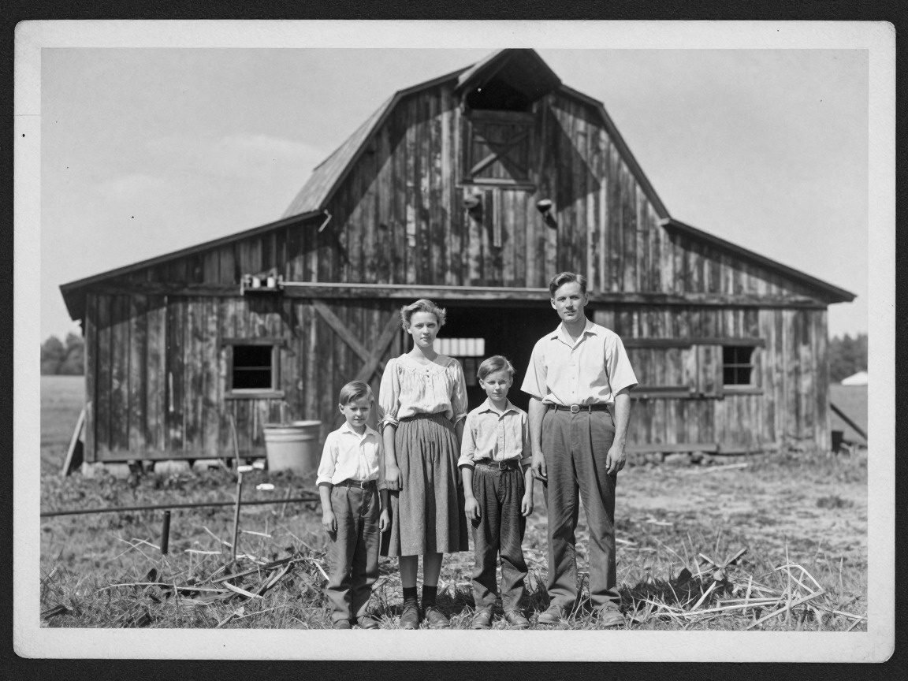
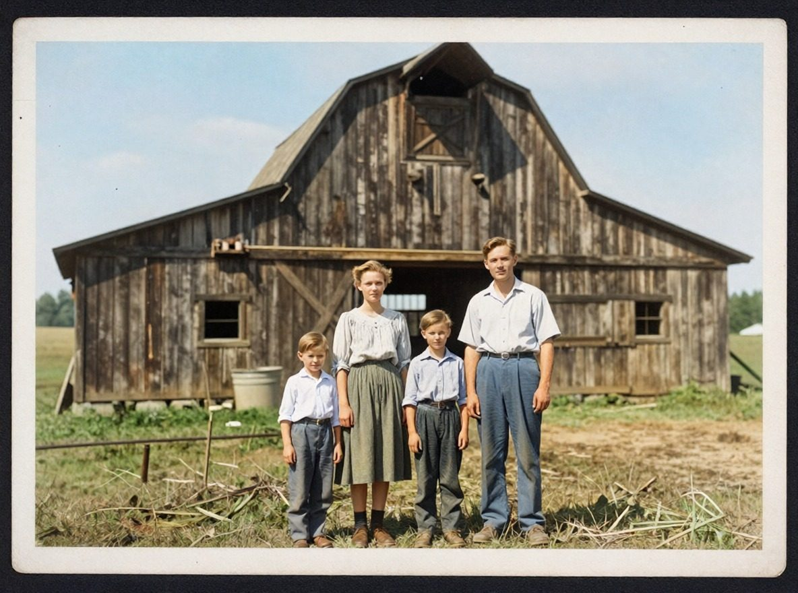
Restore
Scratches, dust, stains, creases and noise away, the people and the composition kept: Qwen-Image Edit with a restoring prompt, 59 s. This wedding photo was made damaged on purpose — Z-Image Turbo drew the fold and the water stains, a script added dust and scratches — and came back clean, both faces the same. Best on a scan or a photo of the print taken straight on; colour it afterwards with Edit further → Colorize.
Faces
Faces and hands found (YOLO), outlined and redrawn at full resolution, then pasted back — for group photos whose small faces came out soft or melted. Seven people: 526 s, the time grows with each face and hand. Thorough uses FLUX.2 klein, better on very small faces. A harder case: the gallery.
Upscale
Four times the size, sharper: SeedVR2 7B, the picture brought to 1024 px first. 512 px → 2048 px in 34 s.
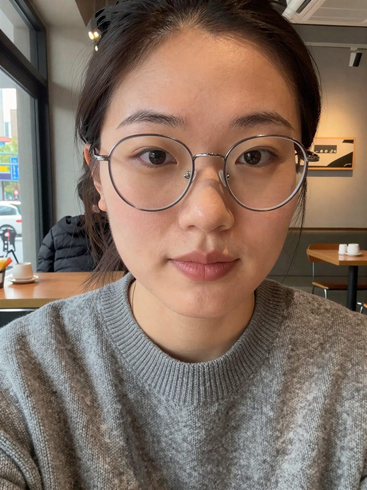
Remove background
The background gone, the person on transparency (PNG, shown here as a checkerboard): BiRefNet, 3 s. Thorough uses BiRefNet Matting, finer at hair.

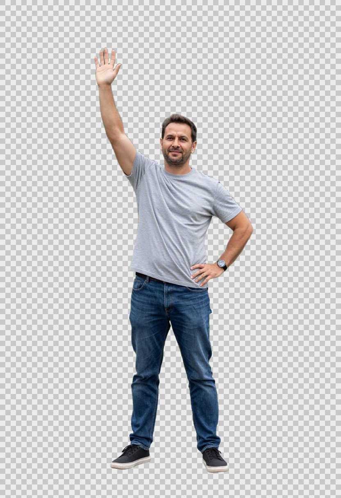
How it was made
The ComfyUI API graph — queue it on a running ComfyUI to make it again.
Erase
Name what should go: "the power lines and pylons" — gone, the sky filled in, 65 s. An instruction to Qwen-Image Edit, no marking needed. Works for people in the background, cars, signs, bins; the templates under Clean up have the usual ones.

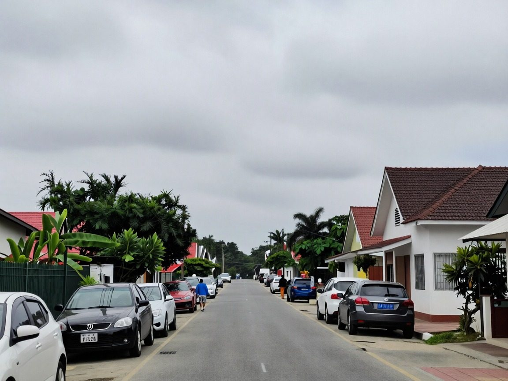
Edit
In one's own words: "Make it a winter day: fresh snow on the street, the roofs and the cars …", 66 s with Qwen-Image Edit Turbo. End with "everything else stays exactly the same" to keep the rest. With a second photo as picture 2: say plainly what comes from which — asked for an outfit, the model once took the whole person.
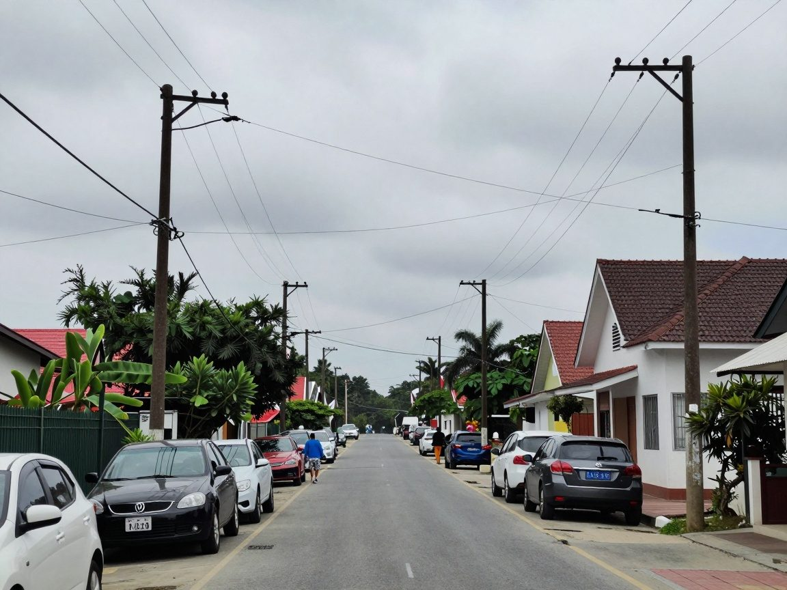
Expand
More picture around it — left and right, above and below, above only, or all round — the scene continued: 40 s, here above and below. A text is optional; if written, describe the whole scene, not only the new part.

Paint over
Mark a spot with a finger and say what goes there: "a red Hawaiian shirt with white flowers", 26 s. Keep shape kept the shirt's cut and folds — mark all of the thing for it. Name the whole thing: "red" alone left a grey hat grey; "a red hat" made it red.

Cut out
One named thing alone on transparency: "the dog", 120 s (Qwen-Image Layered Control). Unlike Remove background it takes what is named, not what is in front.
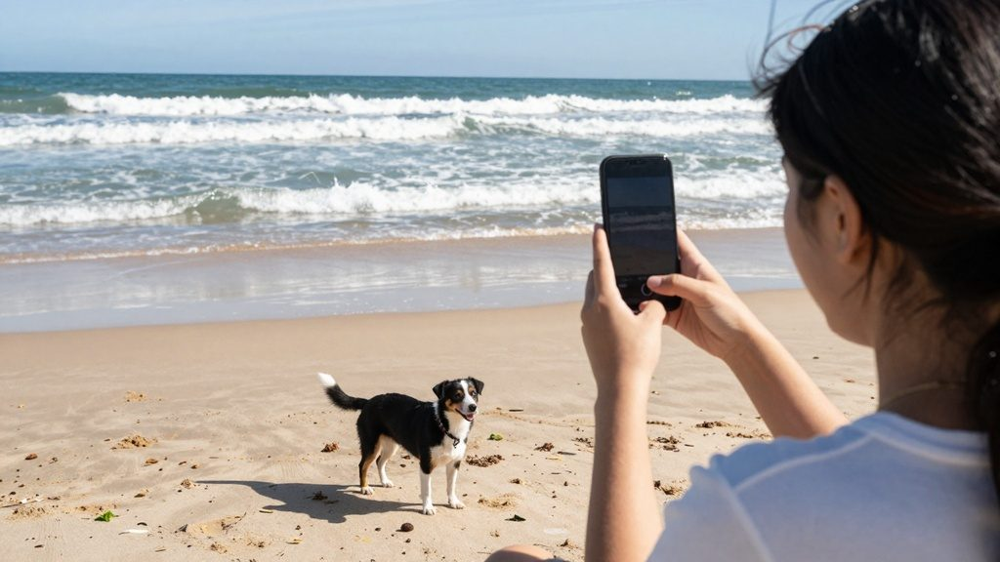
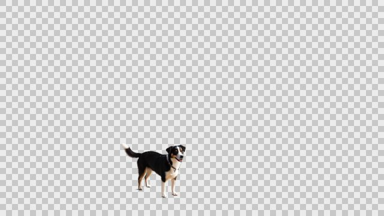
How it was made
- Models
- qwen_image_layered_control_bf16.safetensors, qwen_2.5_vl_7b_fp8_scaled.safetensors, qwen_image_layered_vae.safetensors
- Sampling
- steps 20, cfg 2.5, sampler_name euler, scheduler simple
- Seed
- 125952826346468
The ComfyUI API graph — queue it on a running ComfyUI to make it again.
Copy pose
Someone else, standing exactly the same way: the pose read from the photo (DWPose), "a knight in silver armour in a misty forest" painted on it, 45 s. Describe person and place in full.

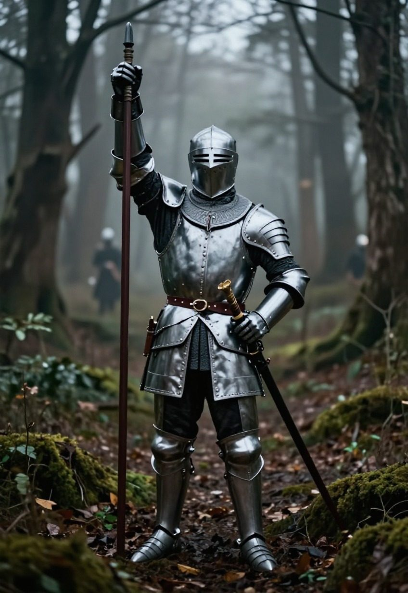
Redesign
The same room, the furniture where it was, in another style: the depth of the photo kept, the rest from the text, 31 s. Describe materials, colours and light: "as an alpine cabin" alone only made the room darker; "wooden walls, beamed ceiling, fireplace, red rugs, sheepskins, warm light" made the cabin. The page says so while the text is shorter than five words.
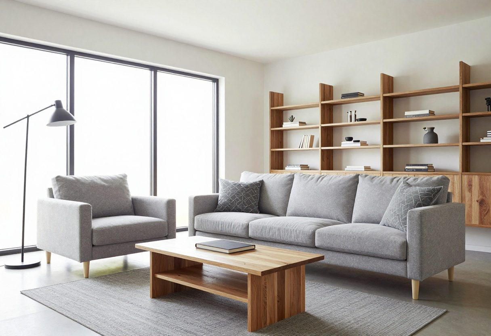
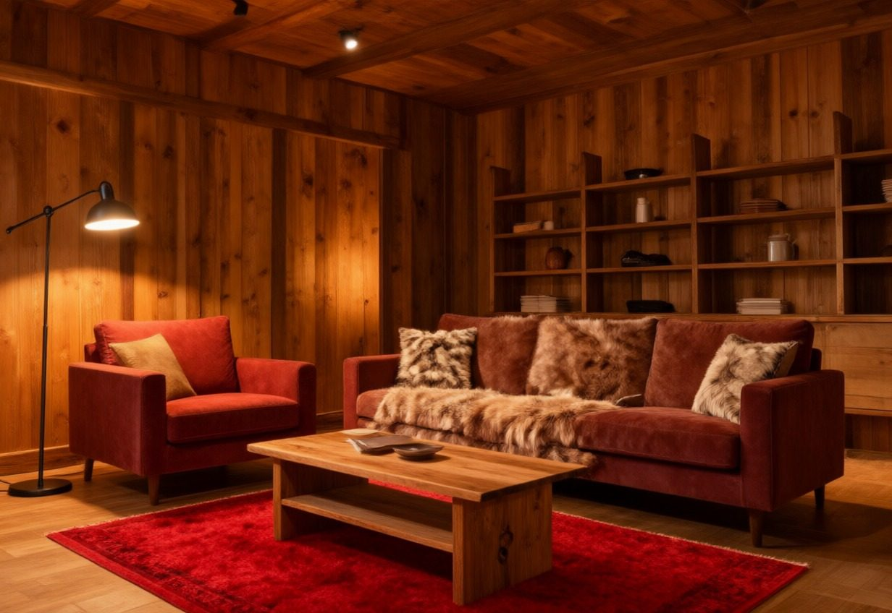
As artwork
The photo as watercolour, pencil drawing, oil painting, comic or anime — the people, their faces and the colours kept: Qwen-Image Edit, 58 s, here as a comic. A text is optional ("like a children's book").
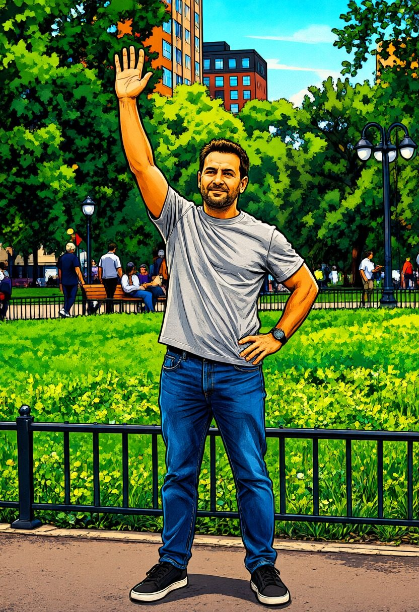
Variants
Where one's own words steer the result, Variants 1–3 makes as many, one after the other, each with another seed — keep the best. The same sunset twice: 46 and 18 s.


Animate
A clip of 3, 5 or 8 s with sound: "the waves roll onto the beach, the dog wags its tail", 5 s in 114 s (Fast: LTX-2.5's first stage, half the size; Thorough both stages, about 6 min). With a second photo the clip runs from the first to it.

How it was made
- Models
- gemma4_e2b_it_int8_convrot.safetensors, ltx-2.5-22b-distilled-transformer-comfy-int8-convrot.safetensors, ltx-2.5-video-vae-bf16.safetensors, ltx-2.5-audio-vae-bf16.safetensors, gemma4-12b-with-proj-ltx-2.5-comfy-int8-convrot.safetensors, ltx-2.5-latent-spatial-upscaler-x2-bf16-1.0.safetensors, seedvr2_ema_vae_fp16.safetensors, seedvr2_3b_int8_convrot.safetensors, film_net_fp16.safetensors
- Sampling
- sampler_name euler_ancestral
- Seed
- 150057875181363
Die Wellen rollen sanft an den Strand und ziehen sich wieder zurück, der Hund wedelt mit dem Schwanz. Die Kamera steht still.
pc game, console game, video game, cartoon, childish, ugly
The ComfyUI API graph — queue it on a running ComfyUI to make it again.
Make it talk
The photo speaks a recording made on the phone (up to 10 s), the clip as long as the voice: 153 s for 8.5 s, Fast. A face that fills the picture works best.

How it was made
- Models
- gemma4_e2b_it_int8_convrot.safetensors, ltx-2.5-22b-distilled-transformer-comfy-int8-convrot.safetensors, ltx-2.5-video-vae-bf16.safetensors, ltx-2.5-audio-vae-bf16.safetensors, gemma4-12b-with-proj-ltx-2.5-comfy-int8-convrot.safetensors, ltx-2.5-latent-spatial-upscaler-x2-bf16-1.0.safetensors, seedvr2_ema_vae_fp16.safetensors, seedvr2_3b_int8_convrot.safetensors, film_net_fp16.safetensors
- Sampling
- sampler_name euler_ancestral
- Seed
- 116343709945598
The person speaks the words clearly and naturally, lips moving exactly with the voice, small natural head movements and facial expressions. The camera holds still.
pc game, console game, video game, cartoon, childish, ugly
The ComfyUI API graph — queue it on a running ComfyUI to make it again.
Create
A picture from words, no photo needed: six models from fast (Z-Image Turbo, 20 s) to best (FLUX.2 dev, ~5 min); Qwen-Image for lettering, umlauts right — this postcard 41 s. LTX-2.5 makes a clip from words. Compared in the gallery.

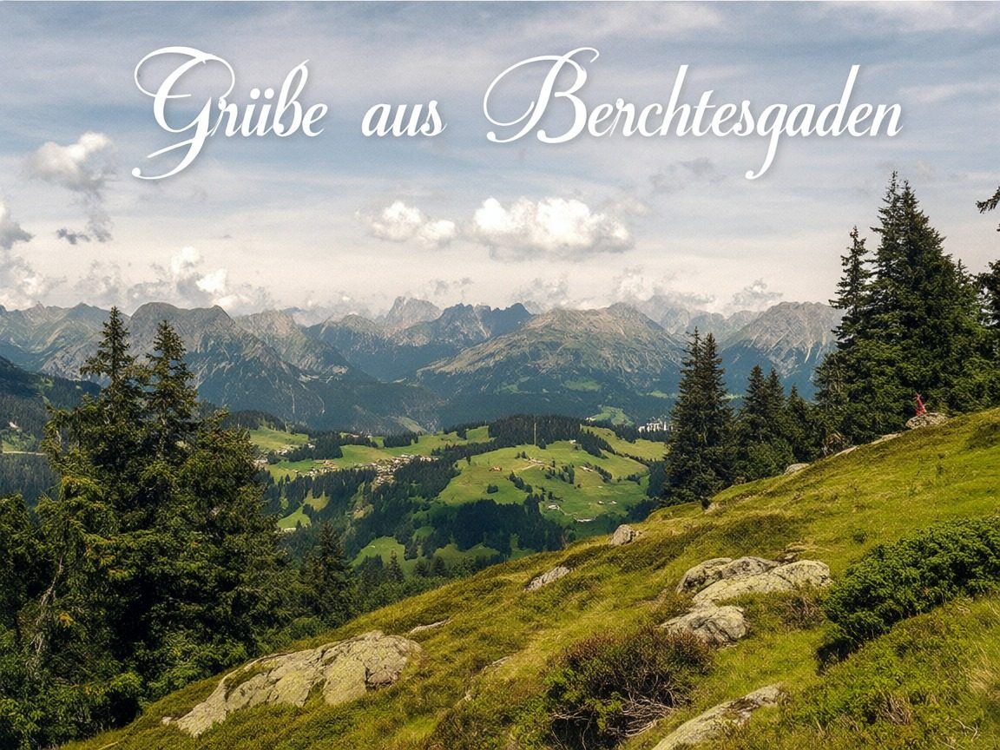
Find flaws and repair
A picture from Create has Find flaws: a vision model looks for broken hands, faces and text and marks them — here: fused fingers on one hand, an over-long index finger on the other (183 s, the model started and stopped for it). Untick what is fine, edit the fix, Repair: 71 s, Thorough.


Templates, cancel, zoom, notifications
- Templates beside each text field: about 70 tried prompts — weather and light, seasons, clean-up, people, backgrounds, rooms, new scenes, video, cards and logos — searchable; a
[placeholder]is selected to type over. Save keeps one's own, for phone and desk alike. - Cancel stops a waiting or running job within seconds.
- Zoom: two fingers up to 4×, a double tap 2.5×.
- Notify me when done: a push when a job ends, also with the screen locked (on an iPhone: from the home screen).
- The history keeps the last 100 results on the server; Edit further takes a result on — restored, then coloured, then enlarged.